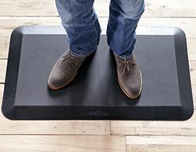
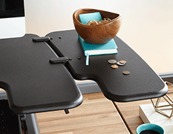
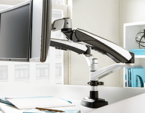

A workspace that works for you
Customize and accessorize your pro plus 36
Buying a standing desk is a big commitment, an you want to get it right. We want to help you create a happier, healthier, more productive work space that lets you perform at your best. So, choose the finish for your Pro Plus 36 that matches your decor - either original black or crisp, modern white - and then add some accessories to create a workspace that lets you shine



-
Anti Fatigue Mats
Our mats give you full-body cushion and support to make standing more comfortable
-
Side Panels
Place your displace in the exact position you like and create some extra space on your workstop!
-
Monitor Arms
Claim some extra work space for your Pro Plus so you can spread out and get comfortable